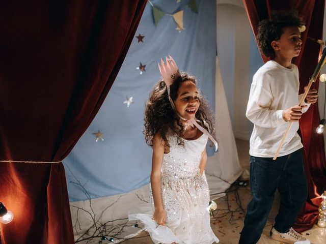
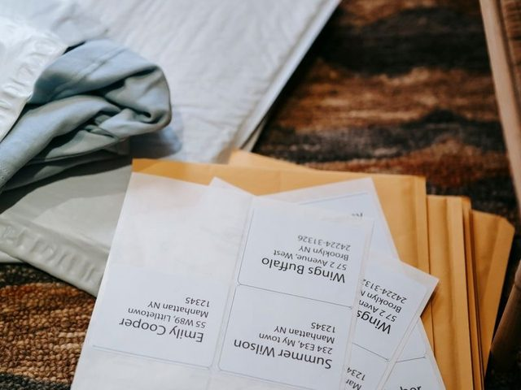
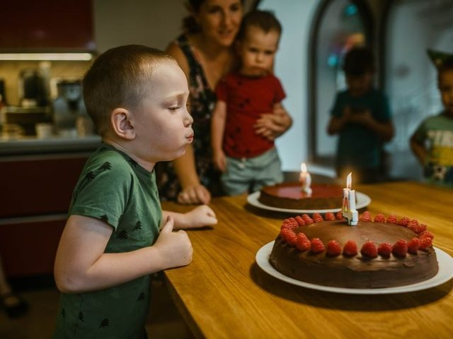
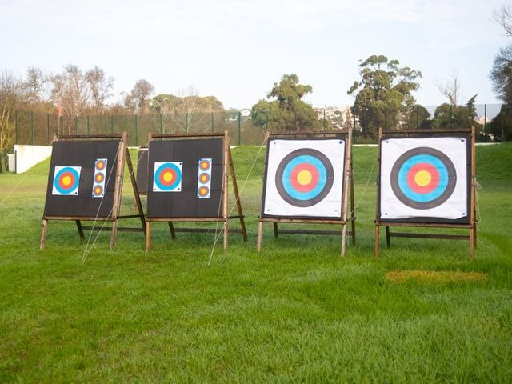

WORD UP「A-I」的 38 個字（A.M. 到 aim）。紅色＝在 WORD UP 還不熟或在這裡答錯的字，先複習紅色的字再做測驗。
🌅
1A.M.adv.
上午
= a.m.；下午是 P.M.
School starts at 8:00 A.M.學校早上八點開始上課。
💪
2abilityn.
能力
able 的名詞
She has the ability to swim very fast.她有游得很快的能力。
🙆
3ableadj.
能夠的
be able to + V
Are you able to come to my party?你能來我的派對嗎？
4abroadadv.
在國外；到國外
go abroad（不加 to）
My cousin is studying abroad in Canada.我表哥在加拿大留學。
5absentadj.
缺席的
be absent from 缺席…
Tom was absent from school because he was sick.Tom 生病沒來上學。
6acceptv.
接受
Please accept this small gift.請收下這份小禮物。
🚑
7accidentn.
意外；事故
by accident 意外地
There was a car accident on the road.路上發生了車禍。
8achievev.
達成；實現
achieve a goal
Work hard and you will achieve your dream.努力就會實現夢想。

9actv./n.
表演；行動
actor 演員
He acts in the school play.他在學校的話劇裡演出。
🏃
10actionn.
行動；動作
take action 採取行動
We need to take action now.我們現在就要採取行動。
11activeadj.
活躍的；積極的
My grandma is still very active.我奶奶還是很有活力。
🤸
12activityn.
活動
複數 activities
Swimming is my favorite summer activity.游泳是我最喜歡的夏日活動。
13actorn.
男演員
The actor smiled at his fans.那位男演員對粉絲微笑。
🎬
14actressn.
女演員
She wants to be an actress.她想當女演員。
💭
15actuallyadv.
實際上；其實
Actually, I don't like coffee.其實我不喜歡咖啡。
16addv.
加；增加
add A to B
Add some sugar to the tea.在茶裡加點糖。
➕
17additionn.
加；增加
in addition 此外
We learned addition in math class.我們在數學課學加法。

18addressn.
地址
email address 電子郵件地址
What is your home address?你家的地址是什麼？
👏
19admirev.
欣賞；佩服
I admire my teacher very much.我很佩服我的老師。
🙋
20admitv.
承認
admit – admitted
He admitted that he broke the window.他承認是他打破窗戶的。
21adoptv.
領養；採用
We adopted a cat from the shelter.我們從收容所領養了一隻貓。
🧑
22adultn.
成年人
This movie is for adults only.這部電影只限成人觀看。
⏩
23advancen./v.
前進；進步
in advance 事先
Please buy the tickets in advance.請事先買票。
👍
24advantagen.
優點；好處
take advantage of 利用
Living near school is a big advantage.住在學校附近是一大好處。
25advertisementn.
廣告
= ad
I saw an advertisement for a new phone.我看到一則新手機的廣告。
💡
26advicen.
建議；勸告
不可數；a piece of advice
Can you give me some advice?你可以給我一些建議嗎？
🩺
27advisev.
建議；勸告
advice 是名詞、advise 是動詞
The doctor advised me to rest.醫生建議我休息。
📂
28affairn.
事情；事務
This is my own affair.這是我自己的事。
👀
29affectv.
影響
Too much screen time can affect your eyes.看太久螢幕會影響眼睛。
30afraidadj.
害怕的
be afraid of 害怕…
My sister is afraid of dogs.我妹妹怕狗。
31afternoonn.
下午
in the afternoon
We play basketball in the afternoon.我們下午打籃球。
🔁
32againadv.
再一次
Please say that again.請再說一次。

33agen.
年齡
at the age of… 在…歲時
He started to play piano at the age of five.他五歲開始彈鋼琴。
⏳
34agoadv.
在…以前
two days ago 兩天前
I saw him two days ago.我兩天前看到他。
35agreev.
同意
agree with + 人
I agree with you.我同意你的看法。
36aidn./v.
幫助；援助
first aid 急救
Every classroom has a first aid kit.每間教室都有急救箱。
🎗️
37AIDSn.
愛滋病
一種疾病的縮寫
Doctors are still studying AIDS.醫生們仍在研究愛滋病。

38aimn./v.
目標；瞄準
My aim is to read ten books this year.我今年的目標是讀十本書。